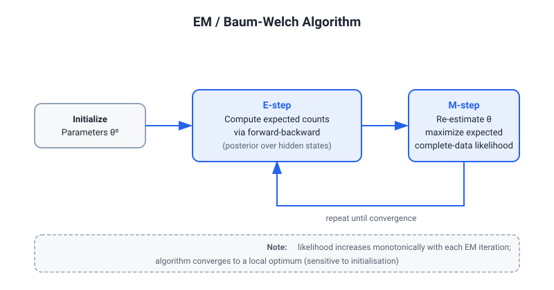
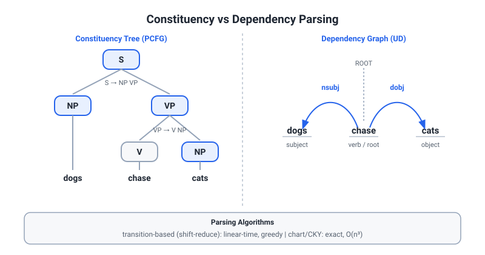
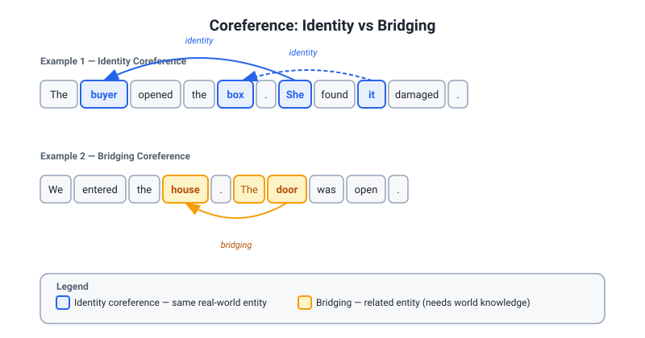
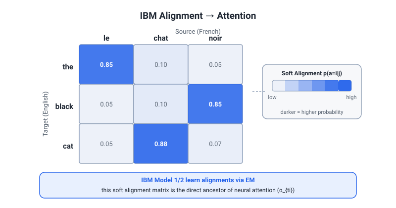

Classical NLP & Machine Translation — Deep Dive
Target: Stage-1 interview with Yannick Versley (Dr.phil. Computational Linguistics; coreference, parsing, discourse, MT; leads LLM pretraining at eBay). PhD-defense depth required. All equations, named methods, and years precise. Tie every section to eBay/LiLiuM/Versley work where natural.
1. EM Algorithm — General Form
1.1 Setup and Objective
Given observed data X, latent variables Z, and parameters θ, the marginal log-likelihood
log p(X|θ) = log Σ_Z p(X,Z|θ)
is intractable when the sum over Z is exponential or continuous. EM maximises it indirectly through the auxiliary function Q.
1.2 E-Step — Expected Sufficient Statistics
Compute the posterior over latent variables under the current parameters θ^(t):
q^(t)(Z) = p(Z | X, θ^(t))
Then form the Q function (expected complete-data log-likelihood):
Q(θ | θ^(t)) = E_{Z ~ q^(t)} [ log p(X, Z | θ) ]
= Σ_Z p(Z | X, θ^(t)) log p(X, Z | θ)
The E-step collects expected sufficient statistics — the quantities of Z needed to evaluate Q. For exponential-family models, these are finite-dimensional.
1.3 M-Step — Maximize Q
θ^(t+1) = argmax_θ Q(θ | θ^(t))
Because the complete-data model p(X,Z|θ) is often a product of simple exponential-family factors, this maximisation has a closed form (weighted counts / weighted moments).
1.4 Monotone Likelihood and Convergence
Theorem (Dempster, Laird & Rubin, 1977): Every EM step does not decrease the observed log-likelihood:
log p(X | θ^(t+1)) ≥ log p(X | θ^(t))
Proof sketch via decomposition:
log p(X|θ) = Q(θ|θ^(t)) − H(θ|θ^(t))
where H = E_{q^(t)}[log q^(t)(Z)] − E_{q^(t)}[log p(Z|X,θ)] = −KL(q^(t) ∥ p(Z|X,θ)) ≤ 0 change from t to t+1. Since M-step increases Q and H cannot decrease (Jensen), the observed likelihood rises.
Local optima: EM converges to a stationary point of the likelihood, not necessarily the global maximum. It is sensitive to initialisation. For GMMs, multiple restarts with k-means++ initialisation or random restarts are standard. For HMMs, random initialisation with several runs is typical.
1.5 EM for Gaussian Mixture Models (GMM)
Latent Z_n ∈ {1,...,K} indicates the component for observation x_n.
E-step — responsibilities:
r_{nk} = p(Z_n=k | x_n, θ^(t))
= π_k^(t) N(x_n; μ_k^(t), Σ_k^(t)) / Σ_j π_j^(t) N(x_n; μ_j^(t), Σ_j^(t))
M-step — weighted ML estimates:
N_k = Σ_n r_{nk}
π_k^new = N_k / N
μ_k^new = (1/N_k) Σ_n r_{nk} x_n
Σ_k^new = (1/N_k) Σ_n r_{nk} (x_n − μ_k^new)(x_n − μ_k^new)^T
Each step is closed-form, and each step increases the log-likelihood. The sufficient statistics are {r_{nk} x_n, r_{nk} x_n x_n^T, r_{nk}}.
1.6 EM for HMMs = Baum-Welch

How does Baum-Welch relate to EM? Baum-Welch (Baum et al., 1970) is the EM algorithm applied to Hidden Markov Models. The HMM has:
- Observed: sequence x_{1:T} (words / emissions)
- Latent: state sequence z_{1:T} (POS tags / topics)
- Parameters: θ = (A, B, π) — transition matrix, emission matrix, initial distribution
E-step — compute expected state-occupation and transition statistics using the forward-backward algorithm:
Forward variable:
α_t(i) = p(x_{1:t}, z_t=i | θ)
= [ Σ_j α_{t-1}(j) a_{ji} ] b_i(x_t)
Backward variable:
β_t(i) = p(x_{t+1:T} | z_t=i, θ)
= Σ_j a_{ij} b_j(x_{t+1}) β_{t+1}(j)
Expected sufficient statistics:
γ_t(i) = p(z_t=i | x, θ) = α_t(i) β_t(i) / p(x|θ)
ξ_t(i,j) = p(z_t=i, z_{t+1}=j | x, θ)
= α_t(i) a_{ij} b_j(x_{t+1}) β_{t+1}(j) / p(x|θ)
These are the "expected counts": γ_t(i) = expected time in state i at step t; ξ_t(i,j) = expected number of transitions i→j at step t.
M-step — update parameters with these weighted counts:
π_i^new = γ_1(i)
a_{ij}^new = Σ_t ξ_t(i,j) / Σ_t γ_t(i)
b_i(v)^new = Σ_{t: x_t=v} γ_t(i) / Σ_t γ_t(i)
This is exactly the EM M-step: the parameters are set to the MLE given expected sufficient statistics. Forward-backward is just efficient (dynamic-programming) computation of the E-step posterior p(Z|X,θ) for the chain-structured HMM. The O(T K²) complexity is the key efficiency gain over naive summation over all K^T state sequences.
Hardest follow-up: "What changes if emissions are Gaussian instead of categorical?" — Same M-step logic; μ_i^new = Σ_t γ_t(i) x_t / Σ_t γ_t(i) and Σ_i similarly. Baum-Welch still applies; it generalises to any exponential-family emission.
2. Sequence Labeling
2.1 HMM — Generative, Viterbi, Baum-Welch
HMMs model p(x,y) = p(y_1) Π_t p(y_t|y_{t-1}) p(x_t|y_t) — generative (joint over observations and labels). For POS tagging: y_t = tag, x_t = word.
Viterbi decoding (MAP inference):
v_t(j) = max_{y_{1:t-1}} p(y_{1:t-1}, y_t=j, x_{1:t})
= max_i [ v_{t-1}(i) a_{ij} ] b_j(x_t)
Backpointers store argmax; backtrack at T to recover the best sequence. Complexity O(T K²). For CRF replace max with sum; this is the partition-function forward algorithm.
Training: MLE with full supervision uses direct counts. EM / Baum-Welch for unsupervised / semi-supervised (see §1.6).
2.2 MEMM — Label-Bias Problem
Maximum Entropy Markov Models (McCallum et al., 2000) model:
p(y_t | y_{t-1}, x_{1:T}) = softmax over tags conditioned on (y_{t-1}, x_{1:T})
Label-bias problem (Lafferty et al., 2001): Each state locally normalises its outgoing transitions. A state with few outgoing arcs (or a dominant next-state) absorbs all probability mass regardless of observations. States with one successor become "observation-independent" — they ignore evidence. This is a fundamental flaw of local normalisation in sequential discriminative models.
Concrete example: Consider state A with only one successor B. Then p(B|A, x) = 1 for ALL x. The observations x at that timestep have zero effect. States with few transitions dominate; observations at those positions are ignored.
2.3 CRF — Global Normalisation
Conditional Random Fields (Lafferty, McCallum & Pereira, 2001) address label-bias by normalising globally over the entire sequence:
p(y | x) = (1/Z(x)) exp( Σ_t Σ_k λ_k f_k(y_{t-1}, y_t, x, t) )
where feature functions f_k can look at any part of x (the whole input) and the current + previous tag. Z(x) = Σ_{y'} exp(Σ...) is the partition function over all label sequences (computed via the forward algorithm, same recurrence as HMM but with sum-products over potentials, not probabilities).
Why CRF beats MEMM:
- Global normalisation: probability mass is distributed over complete sequences, not locally per step. No state absorbs mass by ignoring observations.
- Arbitrary feature overlap: features can fire on combinations of current/previous tags AND arbitrary input windows — no independence assumptions on features.
- Optimal (MAP) decoding via Viterbi on the unnormalised potentials. Training via gradient ascent on log-likelihood with L-BFGS (or CRF-SGD); gradient involves forward-backward for computing marginals.
Log-linear form: score(y,x) = Σ_t w · φ(y_{t-1}, y_t, x, t); CRF = log-linear model whose partition function normalises over sequences, not local positions.
2.4 BiLSTM-CRF
Lample et al. (2016) combined a bidirectional LSTM to produce contextual emission scores with a CRF output layer. The LSTM computes per-token tag score vectors s_t ∈ R^K; the CRF uses these as unary potentials plus learned transition parameters A ∈ R^{K×K}:
score(y, x) = Σ_t [ s_t(y_t) + A(y_{t-1}, y_t) ]
Training: exact forward-algorithm log-Z for gradient; Viterbi for decoding. This became the dominant NER/POS architecture until transformer-based taggers (2018+). Key property: BiLSTM provides long-range contextual features; CRF ensures globally consistent labeling (e.g., B→I→O consistency, no I-PER after B-ORG).
2.5 Transformer Taggers
BERT-based taggers (Devlin et al., 2019) feed the transformer contextual representation into a linear CRF or simply a softmax per token. The CRF output layer remains valuable for structured output consistency. XLM-R (Conneau et al., 2020) enables cross-lingual zero-shot POS/NER tagging (relevant to eBay's 190-market multilingual stack; LiLiuM's multilingual training).
Hardest follow-up: "For NER on eBay product titles — noisy, short, no sentence structure — would you still use a CRF output layer or drop it?" Answer: CRF marginal benefit decreases as sequences shorten and entities rarely span long ranges; a flat softmax may suffice. But for preserving B-I-O consistency in few-shot regimes, keeping CRF is safer. Empirically test via ablation on your dev set; on product titles CRF often adds +0.5–1 F1.
3. Parsing

3.1 Constituency Parsing — CKY and PCFG
Probabilistic Context-Free Grammar (PCFG): Rules A → BC or A → w, each with probability p(rule|LHS). The probability of a parse tree T is the product of all rule probabilities. The best parse maximises this product.
CKY Algorithm (Cocke-Kasami-Younger): Dynamic programming over chart cells [i,j] representing spans of the input. For a grammar in Chomsky Normal Form (only A→BC or A→w):
P[i][j][A] = max_{i ≤ k < j, rules A→BC} P[i][k][B] × P[k+1][j][C] × p(A→BC)
P[i][i][A] = p(A → w_i) if rule exists
Complexity O(n³ |G|) where n = sentence length and |G| = grammar size. Inside algorithm replaces max with sum for computing marginal probabilities (used in EM-based parameter estimation for PCFGs — again, an EM application).
Limitations of PCFGs: Independence assumption — rule probability depends only on LHS non-terminal, ignoring parent/sibling context. Lexicalised PCFGs (Collins 1997, Charniak 1997) condition on lexical heads to capture subcategorisation and structural preferences.
Neural constituency parsers: Chart-based span scorers (Stern et al. 2017; Kitaev & Klein 2018 using self-attention for span representations); constituency tree from span scores via CKY. Kitaev, Cao & Klein (2019) with XLM contextual embeddings = strong multilingual constituency parser.
3.2 Dependency Parsing
Transition-based vs Graph-based — fundamental trade-off between linear-time greedy decoding and global optimisation.
Transition-Based: Arc-Standard vs Arc-Eager
Arc-Standard (Nivre 2004):
- State: (stack, buffer, arc set)
- Transitions: SHIFT (push buffer head to stack), LEFT-ARC (add arc, pop stack), RIGHT-ARC (add arc, pop stack)
- Builds trees bottom-up. LEFT-ARC requires all dependents of the left word to be processed first → cannot handle rightward dependencies early.
- Complexity: O(n) transitions, O(n) if oracle; with beam = O(n·b).
Arc-Eager (Nivre 2003):
- Adds REDUCE (pop without arc) and a different RIGHT-ARC that does not pop the head
- Builds trees incrementally, attaches right dependents before their subtrees are complete
- Better for projective dependencies where early attachment improves coverage
- Both require projective trees by default; non-projective extensions (pseudo-projective transformations, or swap transitions Nivre 2009) add complexity.
Training arc classifiers: MLP over hand-crafted features (pre-deep learning era); Chen & Manning (2014) used neural features; Dozat & Manning (2017) biaffine attention is now standard (see graph-based below).
Graph-Based: MST and Biaffine
MST / Eisner algorithm:
- Score each arc independently: s(head, dep) via a neural scorer
- Find the maximum spanning tree (MST) over all possible arcs
- Projective trees: Eisner (1996) CKY-style O(n³) DP
- Non-projective trees: Chu-Liu/Edmonds' algorithm O(n²) or O(n log n)
- Advantage: globally optimal; captures non-projective dependencies (cross-lingual, free-word-order languages like Czech, German)
Biaffine Parser (Dozat & Manning, 2017):
- BiLSTM (now transformer) encodes tokens → head and dependent representations h_i^{(head)}, h_i^{(dep)}
- Arc score: s(i,j) = h_j^{(dep)T} W^{(arc)} h_i^{(head)} + b
- Relation score: computed similarly with separate W^{(rel)} per label
- Loss: cross-entropy on gold head + gold label per token, summed
- State of the art on UD (Universal Dependencies) across typologically diverse languages
- Combined with XLM-R: Mbert/XLM-R + biaffine = best zero-shot cross-lingual parsing (Schuster & Manning 2019 showed cross-lingual UD transfer is feasible)
3.3 Universal Dependencies
UD (Nivre et al., 2016; now v2.14 with 140+ languages) provides a cross-linguistically consistent annotation scheme:
- Content-head principle: functional words (auxiliaries, determiners, prepositions) are dependents of their content head; enables consistent cross-lingual comparison
- Relation inventory: nsubj, obj, obl, nmod, acl, advcl, aux, det, case, cc, conj, punct, root...
- Relevance to eBay: multilingual dependency structure underlies cross-lingual NLU; understanding UD helps interpret why zero-shot cross-lingual transfer works better for UD-based representations than constituent-based ones; parsing is a component in information extraction pipelines for product attribute extraction
3.4 Evaluation: UAS and LAS
- UAS (Unlabeled Attachment Score): fraction of tokens with correct head assigned (ignoring relation label)
- LAS (Labeled Attachment Score): fraction of tokens with BOTH correct head AND correct dependency relation label
- Computed on test set, excluding punctuation in most UD protocols
- SOTA biaffine + XLM-R: LAS 90+ on high-resource UD languages; drops to 70s for very low-resource treebanks in zero-shot cross-lingual setting
- Cross-lingual LAS is sensitive to tokenisation differences — relevant for morphologically rich languages (DE, PL, TR) where eBay operates
Hardest follow-up: "Why is LAS lower than UAS, and when does the gap matter most?" — LAS < UAS by definition. The gap is largest for fine-grained relation sets or when the distinction between, e.g., nsubj and obj requires syntactic knowledge that transfers poorly cross-lingually. For downstream tasks like information extraction (eBay attribute extraction), relation labels matter; for dependency-based coherence modeling, sometimes UAS suffices.
4. Coreference Resolution (Versley's Home Turf — Maximum Precision Required)
4.1 Task Definition and Mention Detection

Coreference resolution: identify all mentions (noun phrases, pronouns, named entities) in a document and cluster them into equivalence classes (entities) such that all mentions in a cluster refer to the same real-world entity.
Mention detection is the first bottleneck: enumerate candidate spans (all n-grams up to length L, or syntactically driven noun-phrase extraction). False negatives in mention detection propagate; end-to-end models learn to prune candidate spans jointly.
Identity anaphora vs bridging anaphora:
- Identity (coreferent) anaphora: "the car ... it" — the anaphora and antecedent co-refer to the identical entity
- Bridging anaphora (associative / indirect anaphora): "I bought a car. The engine was faulty." — the engine is associated with the car (part-whole, but NOT the same entity). This is Versley's research interest (he has work on bridging in German). Bridging requires reasoning about world knowledge and semantic relations beyond identity. Standard coreference datasets (OntoNotes) focus on identity; bridging has dedicated datasets (BASHI, ISNotes, Bredband)
4.2 Mention-Pair Models
Earliest neural approach: for each pair of mentions (m_i, m_j) with j < i, compute a binary classifier P(coref | m_i, m_j). Cluster by transitive closure (or pairwise compatibility).
Problems:
- Quadratic in mentions
- Transitivity violations: pairwise decisions may be inconsistent
- Mention detection decoupled from coreference scoring
4.3 Mention-Ranking Models
Wiseman et al. (2015, 2016); Clark & Manning (2016). For each mention m_i, rank all preceding antecedent candidates plus a NULL (no antecedent) option. Score each (antecedent, mention) pair; softmax or max-margin training.
Key insight: model antecedent selection as a ranking problem, not binary classification. Training signal from gold antecedent clusters. Clark & Manning add global entity representations by iteratively refining entity cluster representations as mentions are processed.
4.4 Entity-Level / Cluster Models
Higher-order inference: after initial mention-pair scores, iteratively refine entity cluster representations. Clark & Manning (2016) — "entity mention representations" built by attention-weighted composition of cluster members. This allows the model to consider all members of a cluster when deciding whether to add a new mention.
Generalised Entity Models: e.g., Kantor & Globerson (2019); train joint entity/coreference model. Challenge: exact inference over cluster assignments is NP-hard; approximate with beam or variational methods.
4.5 End-to-End Neural Coreference — Lee et al. (2017) ★
"End-to-End Coreference Resolution" (Lee, He, Lewis & Zettlemoyer, EMNLP 2017) — the landmark paper that unified mention detection and coreference scoring.
Architecture:
-
Span representation: for every candidate span [i,j], form:
g_{i,j} = [x_i^*, x_j^*, x̂_{i,j}, φ(i,j)]where x_i^* = learned head attention over the span's token embeddings, x̂_{i,j} = attended representation of the span, φ(i,j) = span-width embedding. Character CNN + GloVe (later replaced with BERT/SpanBERT). -
Span pruning: score each span as a mention with a learned scorer; keep top λ·T candidate spans (λ ≈ 0.4, T = tokens). Reduces O(T²) spans to O(λT) candidates.
-
Antecedent scoring: for mention i and antecedent j:
s(i,j) = s_m(i) + s_m(j) + s_a(i,j)where s_m = mention score, s_a = pairwise antecedent score (bilinear: g_i^T W_a g_j + features). -
Training: marginalise over all gold antecedents with cross-entropy on the softmax over antecedents + ε (epsilon = "no antecedent" / singleton).
Key contributions over prior work:
- Mention detection and coreference scoring trained jointly end-to-end
- Span-based representations remove dependence on syntactic parser
- Efficient top-span pruning
- SpanBERT (Joshi et al., 2020) replacing GloVe further improved F1 dramatically on OntoNotes (~79→83 CoNLL F1)
Higher-order refinement: Lee et al. (2018) added one round of antecedent re-scoring using the expected antecedent representation (expectation over antecedent distribution → update span representation → re-score). This is analogous to a message-passing step on the coreference graph.
4.6 Coreference Evaluation Metrics
MUC (Vilain et al., 1995):
- Precision: for each predicted cluster, how many of its links appear in gold clusters?
- Recall: for each gold cluster, how many of its links appear in predicted clusters?
- Based on minimum number of partitions/merges needed
- Flaw: over-rewards large clusters; a single cluster covering all mentions gets perfect recall; insensitive to singletons
B-Cubed (Bagga & Baldwin, 1998):
- For each mention m: Precision(m) = fraction of coreference-linked mentions (in m's predicted cluster) that are in the same gold cluster; Recall(m) = fraction of gold-linked mentions (in m's gold cluster) that are in the same predicted cluster
- Average over all mentions
- Advantage: considers every mention individually; handles singletons; no assumption about equivalence between links and clusters
- Flaw: if the same entity is split into many predicted clusters, precision drops appropriately
CEAF (Luo, 2005):
- Aligns gold and predicted clusters via maximum bipartite matching (optimal one-to-one mapping)
- Φ_3: entity-level (count of mentions correctly assigned); Φ_4: mention-level (proportion of correctly matched mentions)
- Advantage: no double-counting of mentions across clusters; avoids B-cubed's leniency towards over-merging
CoNLL Average:
CoNLL F1 = (F1_MUC + F1_B3 + F1_CEAF_φ4) / 3
This is the standard CoNLL 2011/2012 shared-task metric (OntoNotes). It averages three complementary perspectives: link-based, mention-based, and cluster-alignment-based.
Hardest follow-up (Versley would ask): "Why not use MUC alone, given it was the first?" — MUC over-rewards merging and is blind to singletons. B-cubed and CEAF correct for this but have complementary failure modes (B-cubed allows double-counting; CEAF requires hard alignment). The average is pragmatic, not principled — but it remains the shared task standard. Recent work proposes LEA (Link-based Entity-Aware metric, Moosavi & Strube 2016) which weights clusters by their size and links, addressing some B-cubed/CEAF gaps.
5. Discourse and Semantic Role Labeling
5.1 RST vs PDTB
Rhetorical Structure Theory (RST; Mann & Thompson, 1988):
- Hierarchical, tree-structured discourse representation
- Relations (Elaboration, Contrast, Cause, Concession, Evidence...) hold between adjacent text spans (EDUs — elementary discourse units)
- Nuclearity: nucleus (essential content) vs satellite (supporting content); asymmetric relations
- RST tree covers the entire document; constituency-like structure
- Datasets: RST-DT (Wall Street Journal, ~385 docs); evaluation: span/nuclearity/relation F1 with RST-Parseval
Penn Discourse Treebank (PDTB; Prasad et al., 2008):
- Non-hierarchical, local, lexically-anchored annotation
- Annotates discourse relations (explicit: "however", "because"; implicit: inferred between adjacent sentences) between pairs of argument spans (Arg1, Arg2)
- 3-level hierarchy of relation types: Level 1 (Temporal, Contingency, Comparison, Expansion); Level 2 (Cause, Concession, etc.); Level 3 finer-grained
- Explicit connectives are lexical triggers; implicit relations are the hard cases (require inference)
- PDTB v3.0 extends annotation; ConnLex for cross-lingual connective lexicons
Key difference: RST = top-down holistic structure; PDTB = bottom-up pairwise annotation. PDTB is more practical for extraction models; RST captures global document structure (useful for summarisation, coherence).
Relevance to Versley: his work on discourse (German RST; cross-lingual pronoun/coreference in MT = DiscoMT) connects to how discourse structure affects translation of discourse-level phenomena (pronoun anaphora, connectives across sentence boundaries).
5.2 Coherence
Barzilay & Lapata (2005/2008) — entity-grid coherence model: represent documents as grids (entities × sentences) with syntactic roles (subject/object/other/absent); compute transitions; train discriminatively. Neural extensions (Li & Hovy 2014; Xu et al. 2019) use LSTMs/transformers over sentence representations to score coherence.
Coherence is evaluated via discrimination tasks (rank coherent document above shuffled versions) or insertion tasks (identify correctly-placed sentence among distractors).
5.3 Semantic Role Labeling (SRL)
PropBank (Palmer et al., 2005): annotates verb-specific semantic roles (ARG0 = proto-agent/subject, ARG1 = proto-patient/object, ARG2–ARG5 = verb-specific; ArgM-LOC, ArgM-TMP for adjuncts). CoNLL-2005/2009 SRL shared tasks. Neural SRL: Peters et al. ELMo → BERT → span-based models (He et al. 2018 biaffine SRL).
FrameNet (Baker et al., 1998): richer, frame-based semantics. Each frame (e.g., Commerce_buy) evokes a set of roles (Buyer, Seller, Goods, Money). More expressive than PropBank; harder to train due to sparsity. Frame-semantic parsing: identify frame-evoking lexical units, frame type, and role-fillers.
SRL evaluation: F1 on argument spans + labels (CoNLL eval script). Cross-lingual SRL leverages Universal PropBank and multilingual frame resources.
6. Distributional and Compositional Semantics
6.1 Distributional Semantics
Harris's Distributional Hypothesis (1954): words occurring in similar contexts have similar meanings. Operationalised via co-occurrence matrices (word × word or word × context), then low-rank factorisation (LSA: SVD; NNMF).
word2vec (Mikolov et al., 2013):
Skip-gram objective: for each word w_t and context word w_c within window size k:
L = Σ_{t} Σ_{-k ≤ j ≤ k, j≠0} log p(w_{t+j} | w_t)
p(w_c | w_t) = exp(v_{w_c}^T v_{w_t}) / Σ_w exp(v_w^T v_{w_t})
Training with negative sampling (approximation of the softmax): maximise score for positive pair, minimise for k sampled negatives. Efficiently trained with SGD. Input/output embedding matrices (V × d); final embeddings are the input matrix.
GloVe (Pennington et al., 2014): Factorises log co-occurrence matrix X with weighted least squares:
J = Σ_{i,j} f(X_{ij}) (w_i^T w̃_j + b_i + b̃_j − log X_{ij})²
where f(X_{ij}) is a saturation weighting function (f(x) = (x/x_max)^α for x < x_max, else 1). Captures global co-occurrence statistics explicitly; word2vec captures local context. In practice, performance is similar.
6.2 Contextual Embeddings
ELMo (Peters et al., 2018): biLM (bidirectional LSTM language model) produces context-sensitive representations; task-specific weighted combination of all LSTM layers (learned weights). First to show that lower layers capture syntax, upper layers capture semantics.
BERT (Devlin et al., 2019): bidirectional transformer; pre-trained with MLM (masked language modeling: predict 15% masked tokens) + NSP (next sentence prediction). Contextual embeddings condition on both left and right context simultaneously. WordPiece subword tokenisation (BPE variant). Key: BERT representations can be fine-tuned end-to-end for downstream tasks (NER, QA, GLUE benchmarks).
6.3 Compositional Semantics
Distributional semantics captures word meaning; compositionality addresses phrase/sentence meaning. Classical approaches: lambda-calculus formal semantics (Montague grammar). Neural approaches: recursive neural networks (Socher et al. 2011), tree-structured LSTMs (Tai et al. 2015). Modern LLMs implicitly learn composition but without explicit semantic parsing; neurosymbolic approaches (BeamSearch + formal semantics) remain active research.
7. Classical SMT to NMT Bridge
7.1 IBM Word Alignment Models (EM Application)

IBM Model 1 (Brown et al., 1993):
Factorises translation probability as:
p(f | e) = Σ_a [1/(|e|+1)^|f| × Π_{j=1}^{|f|} t(f_j | e_{a(j)})]
where f = foreign sentence, e = English sentence (with NULL), a = alignment function (f position → e position). The prior on alignment is uniform.
EM training for IBM Model 1:
- E-step: compute expected alignment counts:
c(f|e) = Σ_{sentences} Σ_j [t(f_j|e_i) / Σ_i' t(f_j|e_i')] × count(f_j,e_i in pair)(posterior probability that f_j is aligned to e_i = soft EM count) - M-step: update translation table:
t(f|e) ← c(f|e) / Σ_{f'} c(f'|e)
Model 1 has global optimum (convex; unique fixed point). Convergence is guaranteed.
IBM Model 2: adds positional alignment prior a(i|j,|e|,|f|); joint EM over t and a parameters. Non-convex; sensitive to initialisation (warm-start from Model 1).
IBM Models 3-5: increasingly complex distortion, fertility (one source word generates multiple target words), and lexical translation models. GIZA++ implements these. All trained with EM (or variants). Model 3+ require constrained EM because the E-step marginalisation over alignments is intractable; heuristic hill-climbing neighbourhood search used.
7.2 Phrase-Based SMT (Log-Linear Framework)
Statistical MT was dominated 2003–2014 by phrase-based systems (Koehn et al., 2003 — Pharaoh/Moses). The translation model is a log-linear combination of feature functions:
p(f | e) ∝ exp( Σ_k λ_k h_k(f, e) )
Key feature functions:
- Translation model (TM): log p(phrase_f | phrase_e) and log p(phrase_e | phrase_f) — bidirectional phrase translation probabilities extracted from word-aligned parallel corpora
- Language model (LM): log p_LM(f) = Σ_t log p(f_t | f_{t-n+1}...f_{t-1}) — n-gram LM on target side; Kneser-Ney smoothing; trained with SRILM/KenLM
- Reordering model: log p(reorder | adjacent phrases) — monotone/swap/discontinuous reordering probabilities
- Word penalty: λ_{wp} × |f| — penalises/rewards sentence length to control verbosity
- Phrase penalty: constant per phrase used
Decoding: beam search over partial hypotheses (left-to-right target generation); each hypothesis tracks source coverage (which source words are translated). MERT (Minimum Error Rate Training; Och 2003) tunes log-linear weights λ_k by minimising BLEU on held-out set via coordinate ascent.
Reordering models — key challenge (especially for German-English: verb-final clause structures, split verbs):
- Lexical reordering: condition on adjacent phrase pair identities; learn monotone/swap/discontinuous probabilities
- Hierarchical phrase-based MT (Chiang 2007 — Hiero): introduces non-terminal X in phrase rules, enabling hierarchical reordering without explicit reordering model. Grammars parsed with CKY; captured long-distance reordering
The role of word alignment in phrase extraction:
- GIZA++ aligns source→target and target→source with IBM models + HMM alignment model
- Symmetrisation heuristics (grow-diag-final-and) combine bidirectional alignments
- Phrase pairs extracted from aligned sentence pairs by extracting consistent phrase pairs (no alignment crossing phrase boundaries)
7.3 Neural Machine Translation: Encoder-Decoder + Attention
Sequence-to-sequence (Sutskever, Vinyals & Le, 2014): encode source sequence with LSTM stack to a fixed-length context vector c; decode target sequence autoregressively conditioned on c. Fixed-length bottleneck limits performance on long sentences.
Attention mechanism (Bahdanau, Cho & Bengio, 2015):
At each decoder step t, compute attention over encoder hidden states h_1...h_T:
e_{ti} = a(s_{t-1}, h_i) [alignment model / energy function]
α_{ti} = softmax(e_t)_i [attention weights]
c_t = Σ_i α_{ti} h_i [context vector at step t]
The alignment model a can be:
- Additive: a(s, h) = v^T tanh(W_1 s + W_2 h) [Bahdanau]
- Multiplicative: a(s, h) = s^T W h [Luong et al. 2015]
- Dot-product: a(s, h) = s^T h / √d [scaled; leads to transformer attention]
How does attention relate to word alignment?
Attention was explicitly inspired by the IBM word alignment models. The attention weight α_{ti} approximates the probability that target word at step t corresponds to ("is aligned to") source position i. Formally:
α_{ti} ≈ p(a_t = i | a_{1:t-1}, y_{1:t-1}, x_{1:T})
This is a soft, differentiable, end-to-end trainable approximation to the hard alignment function a(j) in IBM Model 1/2. Key differences from IBM alignment:
- Soft vs hard: attention produces a distribution over all source positions simultaneously; IBM models assign each target word to exactly one source word
- Bidirectional context: encoder in NMT is bidirectional (BiLSTM or transformer); IBM models only use unidirectional source representations
- Non-monotone: attention can attend to any position at any step; no explicit positional alignment model needed (reordering is implicit)
- Joint training: attention is trained jointly with encoder/decoder, not as a separate pipeline step
- Not a proper alignment: attention can be diffuse (spread over many positions), making alignment extraction from attention weights noisy; Koehn & Knowles (2017) showed NMT attention does NOT reliably recover word alignments
eBay connection: eBay uses MT heavily for cross-border trade. LiLiuM outperforms LLaMA-2 on machine translation tasks (arXiv:2406.12023). The product-title translation RAG paper (arXiv:2409.12880) applies retrieval-augmented generation to NMT — retrieval connects to bi-encoder dense retrieval (§10).
Transformer-based NMT (Vaswani et al., 2017): replaces recurrent encoder-decoder with multi-head self-attention + cross-attention. Cross-attention in the transformer decoder IS the attention mechanism: decoder queries attend over encoder key/value pairs. For MT:
- Encoder: self-attention over source tokens
- Decoder: masked self-attention over target tokens (past only) + cross-attention over encoder outputs
- Cross-attention weights ≈ soft word alignment
8. Multilingual and Cross-Lingual Representations
8.1 mBERT vs XLM-R
mBERT (Multilingual BERT; Devlin et al., 2019):
- MLM-trained on 104-language Wikipedia concatenation
- Shared BPE vocabulary of 110K tokens; over-represents high-resource languages
- No explicit cross-lingual supervision
- Vocabulary per language is too small for morphologically-rich languages → high token fragmentation
XLM (Lample & Conneau, 2019):
- Added Translation Language Modeling (TLM): MLM on parallel sentence pairs (both languages concatenated); forces cross-lingual alignment via shared masked predictions
- Shared BPE vocabulary; performance gain from TLM, especially on parallel-data-rich tasks
XLM-R (Conneau et al., 2020):
- Trained on CC-100: 100 languages × Common Crawl (2.5TB total), ~10× more data than mBERT Wikipedia
- MLM only (no TLM) — but the vastly larger training data compensates
- Vocabulary: SentencePiece Unigram LM with 250K tokens — much larger than mBERT, far less fragmentation for morphologically-rich languages
- Architecture: RoBERTa-style (no NSP; larger batch; more data)
Why XLM-R beats mBERT:
- Training data scale: CC-100 vs Wikipedia — much larger, more diverse text per language
- Vocabulary size (250K vs 110K): fewer UNK tokens and shorter tokenisations for low-resource / morphologically-rich languages; more informative subword units for languages like Turkish (agglutinative), Polish (inflected), German (compounding)
- Better low-resource coverage: Wikipedia coverage for low-resource languages is sparse; CC-100 includes broader web text
- Curse of multilinguality: adding more languages to a fixed-capacity model degrades per-language performance ("capacity dilution"). XLM-R mitigates this via larger model (XLM-R Large = 560M params) and more total data
- No NSP noise: removing Next Sentence Prediction (following RoBERTa) improves representation quality
Benchmark evidence: XLM-R achieves consistent gains on XNLI (+4.6% avg), NER (CoNLL multilingual), and POS across XTREME benchmarks over mBERT.
8.2 Zero-Shot Cross-Lingual Transfer Mechanism
The mechanism (why it works without parallel data):
- Shared subword vocabulary creates surface-level overlap across languages (cognates, code-switching, proper nouns, digits, punctuation)
- Universal syntactic patterns: MLM training on multiple languages causes the model to learn language-universal representations in its middle layers (this is the "intrinsic alignment" hypothesis; Pires et al. 2019; Wu & Dredze 2019 empirical analysis)
- Cross-lingual transfer: fine-tune on English labelled data → evaluate on German/Japanese/etc. without target-language training data. The model's shared representation space allows task classifiers trained on English to generalise to structurally similar target languages
- Limits: transfer quality degrades with linguistic distance (typological distance, script differences), morphological complexity, and domain shift. Cross-lingual transfer for morphologically-rich languages is harder because English-tuned representations may not capture rich inflectional paradigms
Structural alignment via parallel data: TLM, contrastive cross-lingual learning (CCLM; Pan et al. 2021), ERNIE-M — explicit parallel data pushes representations of translation pairs close in embedding space, improving zero-shot transfer further.
8.3 Translate-Train vs Translate-Test
Translate-train: translate English training data (NLI, QA, NER annotations) into target language → fine-tune on translated data → evaluate on target language test set.
- Advantage: task-specific translations; can use machine translation to create pseudo-labelled target-language training data
- Disadvantage: translation errors propagate; translation of label-bearing spans (NER, SRL) is tricky; high MT cost
Translate-test: translate target-language test set into English → evaluate English-fine-tuned model on translated English test.
- Advantage: fine-tune only on English; simpler pipeline
- Disadvantage: MT errors in test set; domain/style mismatch; proper name handling; no exposure to target-language surface forms during inference
Comparison: on XNLI, XLM-R zero-shot (direct) is competitive with translate-train for high-resource languages; translate-train has advantage for low-resource languages with good MT. For eBay's multilingual product understanding, translate-train using eBay's own MT system is attractive because it leverages domain-specific terminology.
8.4 NLLB and FLORES-200
NLLB (No Language Left Behind; NLLB Team, Meta, 2022):
- 200-language multilingual NMT model (NLLB-200: 1.3B and 3.3B parameter encoder-decoder)
- Trained on FLORES-200 evaluation set + mined parallel data (LASER-based bitext mining);
- Supports many low-resource languages with no prior MT support
- Mixture-of-experts and dense variants; sparsely-gated MoE with per-language expert routing
FLORES-200 (benchmark):
- High-quality human-translated benchmark covering 200 languages × 1012 sentences (extracted from WikiVoyage and Wikipedia)
- Enables standardised MT evaluation for low-resource languages
- chrF and BLEU reported; COMET scores increasingly used
eBay relevance: eBay operates in 190 markets; low-resource language MT is critical for cross-border product listing translation. LiLiuM reportedly beats LLaMA-2 on non-English NLU and MT — this is precisely the NLLB/FLORES territory.
8.5 Morphologically-Rich Tokenisation (DE / PL / TR)
German (DE): noun compounding ("Bundesautobahn" = federal highway) creates very long words not seen in training. BPE will segment these; SentencePiece unigram LM learns compact sub-word units that capture compound components. German verb-final clauses and split verbs challenge seq2seq models. eBay titles in German: "Elektrische Zahnbürste für Kinder" — compound + case marking.
Polish (PL): highly inflected (7 cases × gender × number); a single lemma can have 50+ surface forms. Vocabulary explosion. Unigram SentencePiece with large vocabulary (250K) handles this better than BPE-10K/mBERT. Czech/Polish NMT benefits from morpheme-aware segmentation or character-level components.
Turkish (TR): agglutinative; words constructed by chaining suffixes onto stems: "evlerinizden" = "from your houses" (ev-ler-iniz-den). Very long wordforms; SentencePiece/BPE must capture stem + suffix sequences. Vocabulary coverage for Turkish is dramatically better in XLM-R's 250K vocab vs mBERT's 110K.
eBay tokeniser relevance: LiLiuM's custom e-commerce tokeniser achieves up to 34% generation speedup vs LLaMA-2. This is achieved by a domain-adapted vocabulary (BPE trained on eBay's product-title/description corpus) that tokenises e-commerce text more efficiently — shorter token sequences = fewer decoding steps = faster generation. For multilingual eBay titles, this tokeniser must balance e-commerce vocabulary efficiency across all supported languages — precisely the morphological richness challenge above.
9. MT Evaluation
9.1 BLEU
BLEU (Bilingual Evaluation Understudy; Papineni et al., 2002):
BLEU = BP × exp( Σ_{n=1}^{N} w_n log p_n )
where N=4 (unigram through 4-gram), w_n = 1/N = 0.25 uniform, and:
- Modified n-gram precision p_n: count of n-gram matches (clipped by max count in any reference) / count of hypothesis n-grams
- Brevity Penalty:
BP = 1 if c > r BP = exp(1-r/c) if c ≤ rwhere c = hypothesis length, r = reference length (closest reference if multiple). BP prevents trivially short outputs.
BLEU example intuition: if a hypothesis matches all 1-grams (BP=1), p_1=1; but if it has no 4-gram matches, p_4=0 and log p_4 = -∞ → BLEU=0. Require at least some n-gram matches at all levels.
Corpus BLEU (recommended): accumulate all n-gram counts across all sentences, then compute precision once. Sentence-level BLEU is ill-defined (4-gram matches on short sentences → many zeros).
sacreBLEU: standardised BLEU with fixed tokenization (Moses tokeniser or language-specific; default: 13a); reproducible results regardless of codebase. Always report tokenisation scheme.
BLEU's limits:
- N-gram exact match: "big car" ≠ "large automobile" even if semantically equivalent; synonymy unrecognised
- No recall at sentence level: precision-only with BP; doesn't capture reference completeness well
- Poor correlation with human judgments at segment level; better at corpus level
- No adequacy signal: fluent but wrong translations score well if surface n-grams match
- Insensitive to word order beyond n-gram window; grammaticality issues within window penalised unevenly
- Domain and language effects: BLEU scores are not comparable across language pairs or domains
9.2 chrF and chrF2
chrF (Popović, 2015) — character-level F-score:
chrF = (1 + β²) × chrP × chrR / (β² × chrP + chrR)
where chrP and chrR are character n-gram precision and recall (averaged over n=1..6 by default):
chrP = (matched char n-grams) / (hypothesis char n-grams)
chrR = (matched char n-grams) / (reference char n-grams)
CRITICAL NOTE: sacreBLEU's default chrF uses β=1 (equal weight to precision and recall, i.e., F1). The variant chrF2 (β=2) weights recall twice as heavily as precision — this is the named recall-weighted variant used in WMT evaluations. Versley would know this; confusing β=1 and β=2 is a red flag.
Advantages of chrF:
- Morphologically-rich languages: character n-grams capture shared stems, prefixes, suffixes even when exact wordforms differ (e.g., German inflection variants). Critical for DE/PL/TR which eBay serves.
- Language independence: no tokenisation required; character-based; avoids Moses tokeniser language dependencies
- Agglutinative languages: character overlap captures meaningful morpheme-level matches
- Better segment-level correlation with human judgments than BLEU on morphologically-rich language pairs
9.3 METEOR
METEOR (Banerjee & Lavie, 2005):
Alignments between hypothesis and reference words, allowing synonym matching (WordNet), stemming, and paraphrase matching. Computes:
P = matched / hypothesis_words
R = matched / reference_words
F_mean = 10PR / (R + 9P) [recall-weighted harmonic mean]
Penalty = 0.5 × (chunks/matches)^3
METEOR = F_mean × (1 - Penalty)
The penalty penalises fragmented matches (many short chunks = higher penalty). Better sentence-level correlation with human judgment than BLEU; handles synonymy. Less commonly used as primary metric at WMT now.
9.4 COMET, COMETKiwi, BLEURT
COMET (Rei et al., 2020; Rei et al., 2022):
Neural MT metric trained on human judgment data (DA scores, MQM annotations from WMT). Architecture: XLM-R encoder + regression head.
Input (for COMET-DA): concatenate [source, hypothesis, reference] → XLM-R → pooled representation → scalar quality score.
Training: direct assessment (DA) scores from WMT human evaluations; rank-based margin loss or regression on z-normalised scores.
Key properties:
- Much higher segment-level correlation with human judgments than BLEU/chrF
- Sensitive to adequacy errors (wrong meaning), fluency errors, hallucinations
- Not interpretable (neural black-box); domain-sensitive (trained on news; may not generalise to e-commerce)
- Model versions: COMET-DA (reference-based), COMET-22, COMET-Kiwi (reference-free)
COMETKiwi (Rei et al., 2022): Reference-free quality estimation (QE): input is only [source, hypothesis] (no reference). Trained on MQM + DA data. Enables production QE where references are unavailable. eBay application: QE for machine-translated product listings without ground-truth references → filter low-quality translations before display.
BLEURT (Sellam et al., 2020): BERT fine-tuned with human ratings; also trained with synthetic perturbations (masking, backtranslation) as pre-fine-tuning. Captures paraphrase-level similarity. Less common in 2025+ WMT evaluations (COMET dominates).
Metric landscape in 2025: WMT Metrics Shared Task has increasingly shown COMET > chrF > BLEU for human-judgment correlation. Reference-free COMETKiwi is competitive with reference-based BLEU/chrF; neural metrics are the gold standard for research but BLEU/chrF remain reported for reproducibility.
9.5 Bootstrap Resampling Significance and Paired Tests
Bootstrap resampling (Koehn, 2004): Sample n test sentences with replacement B times (B=1000); compute BLEU/chrF for each bootstrap sample; estimate confidence intervals from percentile distribution. Test statistical significance by comparing two systems: fraction of bootstrap samples where system A > system B.
Paired tests:
- Wilcoxon signed-rank test: non-parametric test on matched pairs (segment-level scores for system A vs B); tests whether median difference ≠ 0. More appropriate when score distributions are non-normal.
- Approximate randomisation test: permute sentence-level score assignments between two systems B times; compute p-value as fraction of permutations with larger gap than observed. WMT official significance test.
WMT practice: WMT evaluation reports significance clusters via paired bootstrap or pairwise t-test with Bonferroni correction for multiple comparisons. Systems in the same cluster are not significantly different. COMET scores are compared this way.
Critical point for Versley: always pair evaluation with significance testing before claiming system A > system B; with eBay's product translation MT pipeline, test-set size matters (short product titles → high BLEU variance → bootstrap CIs are wide).
9.6 MT Hallucination
Types (Raunak et al., 2021; Dale et al., 2022):
-
Over-translation: hypothesis contains content not present in source — fabricated phrases, added specifications, invented attributes. E.g., "blue t-shirt" → "navy blue cotton t-shirt with floral pattern." In e-commerce, catastrophic: false product claims.
-
Under-translation: hypothesis omits part of source — dropped clauses, missing attributes. E.g., "6-inch stainless steel kitchen knife" → "kitchen knife." Reduces product findability on eBay.
-
Brand name hallucination: model substitutes one brand name for another (confused by brand name morphology or training co-occurrence). Extremely dangerous for product listings: legal and consumer protection liability. E.g., "Samsung Galaxy" → "Huawei Galaxy" due to shared "Galaxy" string.
-
Oscillatory/repetitive hallucination: model enters degenerate loop, repeating phrases. Beam search artifact when length penalty is miscalibrated.
-
Named entity errors: dates, model numbers, product dimensions garbled.
Detection approaches:
- COMETKiwi QE (reference-free; flags anomalous outputs)
- Faithfulness classifiers (NLI-based: hypothesis entailed by source+reference?)
- Bilingual alignment scores: if hypothesis has low source coverage (many target tokens unaligned), flag as hallucination candidate
- Perplexity-based anomaly detection (hypothesis with very low source-conditional perplexity may be model-generated regardless of source)
eBay impact: hallucinated product attributes in translated listings can violate seller policies, mislead buyers, and create legal exposure. COMETKiwi or a lightweight faithfulness classifier as a post-MT filter is essential.
10. Dense Retrieval Training
10.1 Bi-Encoder Architecture
Bi-encoder (dual-encoder):
score(q, d) = f_q(q)^T f_d(d)
Query encoder f_q and document encoder f_d (often the same model with shared weights; sometimes separate) produce fixed-length dense vectors. Dot product (or cosine similarity) at retrieval time.
Advantage: precompute all document embeddings offline → approximate nearest-neighbour search (FAISS, ScaNN) at query time. O(1) per query after indexing.
Disadvantage: limited cross-attention between query and document at encoding time → less expressive than cross-encoder which attends jointly over [query; document].
10.2 In-Batch Negatives
Training objective: contrastive loss over in-batch pairs.
For a batch of (query, positive document) pairs {(q_i, d_i+)}:
L = - (1/B) Σ_i log [ exp(score(q_i, d_i+) / τ) / Σ_j exp(score(q_i, d_j) / τ) ]
where τ = temperature, B = batch size. Documents from OTHER queries in the batch serve as negatives. This requires NO explicit negative sampling — the batch itself provides B-1 negatives per query.
Key property: larger batch size → more negatives → stronger contrastive signal → better representations. This is why dense retrieval training benefits from large batch sizes (8192+) or distributed batch sharing (gradient communication across GPUs/nodes).
10.3 Hard-Negative Mining
DPR (Dense Passage Retrieval; Karpukhin et al., 2020): Train bi-encoder for open-domain QA retrieval. BM25 hard negatives: retrieve top-k passages with BM25 that are NOT gold positives → use as "hard" negatives in training. Also uses gold negatives from other questions in the batch (in-batch) and random negatives.
Hard negatives are semantically related to the query but not the answer — they force the model to learn fine-grained distinctions, not just positive/random separation.
ANCE (Approximate Nearest-Neighbour Contrastive Estimation; Xiong et al., 2021): Dynamic hard-negative mining: periodically (every N training steps) re-index the document corpus with the current encoder checkpoint; retrieve new hard negatives for each query using the current model; continue training with these fresh hard negatives.
ANCE vs DPR:
- DPR hard negatives are static (BM25-mined); ANCE negatives are dynamic (current-model-mined)
- Dynamic negatives are harder (current model's near-misses) → stronger signal for later-stage training
- Requires periodic full-corpus re-encoding → expensive; asynchronous re-indexing (ANCE-First = initialise from DPR, then one refresh cycle) is practical
Additional hard-negative mining approaches:
- SimCSE (Gao et al., 2021): standard dropout as positive augmentation; in-batch negatives for NLI-trained encoder
- Contriever (Izacard et al., 2022): unsupervised contrastive retrieval with random cropping as positives; no labelled data required
- RocketQA (Qu et al., 2021): cross-encoder provides denoised hard negatives for bi-encoder training
10.4 Cross-Encoder to Bi-Encoder Distillation
Cross-encoder (re-ranker): Jointly attends over [query; document] via transformer; produces relevance score. Slow at indexing time (cannot precompute) but much more accurate.
Distillation objective: train bi-encoder to mimic cross-encoder scores:
L_KD = Σ_{q,d+,d-} KL(softmax(CE_score / τ) ∥ softmax(BE_score / τ))
Or rank-based distillation: margin loss ensuring bi-encoder ranks agree with cross-encoder rankings.
Why this works: cross-encoder has seen the full (query, document) interaction during training; its soft scores encode nuanced relevance signals. The bi-encoder learns to compress these into independent query/document representations.
Tie to eBay LLMDistill4Ads: eBay's LLMDistill4Ads work distils a large LLM (cross-encoder-like relevance) into a smaller bi-encoder for ads retrieval. The bi-encoder serves at indexing scale (billions of product listings); the LLM/cross-encoder provides training signal. This is the exact cross-encoder→bi-encoder distillation pattern: production efficiency (bi-encoder) + accuracy (LLM teacher). Tony's expertise in cost-adaptive routing and model distillation (LLM Router routing cheaper models; MERA skill-adaptation) is directly applicable to this distillation setup.
ColBERT (Khattab & Zaharia, 2020): intermediate: late interaction. Produce token-level embeddings for query and document; score via MaxSim (sum over query tokens of max-similarity to any document token). Can precompute document embeddings; only query-side interaction at retrieval time. Tradeoff: more storage (per-token vs per-doc embedding); higher accuracy than bi-encoder.
eBay search relevance: product search retrieval (query → relevant product listings) is precisely the bi-encoder use case. Hard negatives are naturally available: BM25-retrieved but unpurchased listings. LLM-scored (cross-encoder) relevance for distillation. eBay's at-scale index (1B+ listings) mandates bi-encoder efficiency.
11. Connections to eBay, LiLiuM, and Versley's Work
11.1 LiLiuM and Tokenisation
LiLiuM's custom e-commerce tokeniser directly embodies §8.5: by training a domain-specific BPE vocabulary on eBay product text, they shorten token sequences for e-commerce terminology, achieving up to 34% generation speedup. The multilingual challenge (eBay's 190 markets) requires balancing vocabulary efficiency across typologically diverse languages — exactly the DE/PL/TR morphological tokenisation challenge discussed above.
11.2 MT in eBay Cross-Border Commerce
eBay's RAG + LLM product-title translation paper (arXiv:2409.12880) uses retrieval of similar existing translations as context — this is the bi-encoder (§10) + in-context learning (§7.3) intersection. Evaluation would use BLEU/chrF/COMET (§9); hallucination monitoring (§9.6) is critical for product safety.
Versley's prior work on cross-lingual pronoun in MT (DiscoMT workshop) connects to the discourse-MT interface (§5.1): pronoun translation across languages requires coreference resolution (§4) at the discourse level — "it" in English may be "er/sie/es" in German depending on the antecedent's grammatical gender, not biological gender. This is exactly the bridging coreference + MT intersection Versley has published on.
11.3 VLM Paper and Classical NLP
The VLM e-commerce understanding paper (arXiv:2602.11733, co-authored by Versley) focuses on structured attribute extraction from images + text. This requires:
- NER-like sequence labeling (§2) for attribute mention extraction
- Coreference (§4) to link visual references across multi-modal mentions
- SRL (§5.3) to identify which attributes apply to which product entities
Engaging Versley on the VLM paper's NLP components through a classical-NLP lens ("how do you handle attribute co-reference across image captions and product descriptions?") would demonstrate both domain relevance and comp-ling depth.
11.4 Routing and Discourse
Tony's LLM routing work can be connected to Versley's discourse research: multi-turn dialogue routing (which model handles discourse-requiring turns vs factual turns) parallels coherence modeling (§5.2) — a discourse-coherent conversation requires understanding what entity/topic is being tracked (coreference, §4) to route appropriately.
12. Quick-Reference Summary Table
| Topic | Key Method(s) | Year | Key Metric / Equation |
|---|---|---|---|
| EM | Dempster-Laird-Rubin | 1977 | Q(θ|θ^t) = E[log p(X,Z|θ)] |
| HMM | Baum-Welch = EM | 1970/1977 | α_t(i)β_t(i)/p(x|θ) |
| CRF | Lafferty-McCallum-Pereira | 2001 | Global Z(x); no label-bias |
| BiLSTM-CRF | Lample et al. | 2016 | LSTM unary + transition CRF |
| Dependency | Dozat-Manning Biaffine | 2017 | UAS / LAS |
| Coreference | Lee et al. end-to-end | 2017/2018 | CoNLL F1 = (MUC+B3+CEAF)/3 |
| IBM Align | Brown et al. | 1993 | EM on t(f|e) |
| NMT Attention | Bahdanau et al. | 2015 | α_{ti} = softmax(a(s_{t-1},h_i)) |
| XLM-R | Conneau et al. | 2020 | 250K SentencePiece; CC-100 |
| BLEU | Papineni et al. | 2002 | BP × exp(Σ w_n log p_n) |
| chrF (β=1) / chrF2 (β=2) | Popović | 2015 | char n-gram F-score; sacreBLEU default β=1 |
| COMET | Rei et al. | 2020/22 | XLM-R trained on DA/MQM |
| DPR | Karpukhin et al. | 2020 | In-batch + BM25 hard negatives |
| ANCE | Xiong et al. | 2021 | Dynamic hard-negative mining |
13. Hardest Follow-Up Questions per Section
-
EM: "EM on a non-convex model (IBM Model 2, GMM) is initialisation-sensitive. How do you initialise for IBM Model 2 in practice?" → Warm-start from Model 1 solution (which is convex/global); then run Model 2 EM from Model 1 estimates. This is the standard GIZA++ pipeline.
-
Baum-Welch: "If you have partially observed sequences (some states known), how does Baum-Welch change?" → Constrained E-step: fix γ_t(i)=1 for known states, run forward-backward for unknown segments. M-step uses mixed observed+expected counts.
-
CRF vs BiLSTM-CRF: "Can you have a CRF without handcrafted features? What do features become in the neural case?" → Yes: neural CRF replaces handcrafted features with LSTM/transformer outputs as unary potentials; transition parameters A are the only CRF-specific parameters; BiLSTM provides the feature representation end-to-end.
-
Coreference (Versley's hardest): "End-to-end coreference doesn't handle bridging anaphora. How would you extend Lee et al. 2017 to bridging?" → Need non-identity relation types (part-whole, set-member, property-holder); extend pairwise scorer to classify relation type (identity/bridging-type) in addition to binary coref; training data: ISNotes, BASHI (German), SciCorp. Harder: bridging requires world knowledge (part-of ontologies); retrieval-augmented or knowledge-graph-grounded mention pairs.
-
MT Attention vs Alignment: "Koehn & Knowles (2017) showed NMT attention doesn't reliably reproduce word alignment. If you need word alignments from NMT for data augmentation (e.g., for phrase-based fallback), what do you do?" → Use a dedicated fast_align or mgiza++ alignment model on NMT-decoded output, or use attention roll-out with alignment regularisation loss (Zenkel et al. 2020 external attention supervision), or use awesome-align (neural alignment without MT training).
-
XLM-R: "You said XLM-R has no cross-lingual supervision. How does it learn cross-lingual alignment at all?" → Implicit alignment via: (1) shared subword vocabulary (cognates, proper nouns); (2) structural parallelism in syntax (universal grammar hypothesis); (3) multilingual LM learns to share parameters for typologically similar patterns. Empirically studied by Wu & Dredze (2019): shared subwords and structural similarity are the strongest predictors of transfer quality.
-
chrF / BLEU: "For Turkish product title MT evaluation, would you prefer BLEU or chrF? Why?" → chrF: Turkish agglutinative morphology means exact wordform matches are rare even for correct translations (different case suffix = no BLEU credit); chrF's character-level overlap rewards correct root forms and shared suffixes. sacreBLEU chrF with β=1 for balanced P/R; chrF2 (β=2) if recall-heavy evaluation (avoiding under-translation) is prioritised.
-
Hard negatives: "In eBay product search, what makes a good hard negative for bi-encoder training?" → Same category but different brand/model; same brand but different product line; visually similar items in different subcategories; BM25-top-k retrieved but unbought; cross-category confounders (e.g., "cable" retrieves both USB cable and TV cable). Mining strategy: BM25 for lexical confusion + current-model (ANCE) for embedding-space confusion.